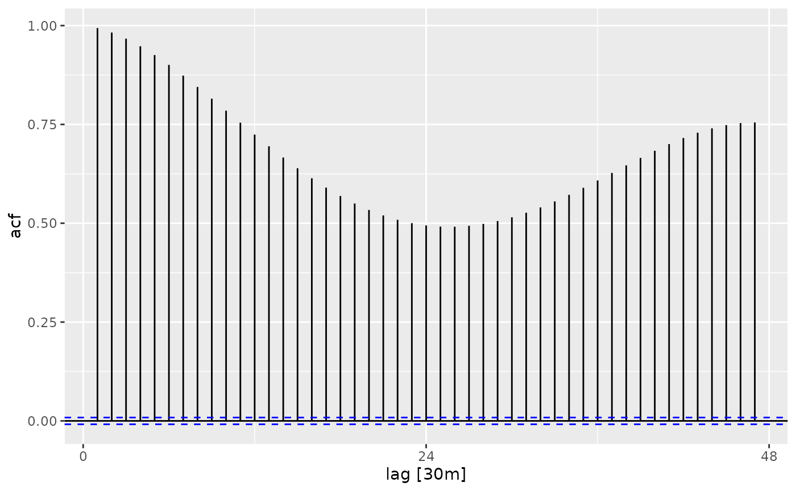
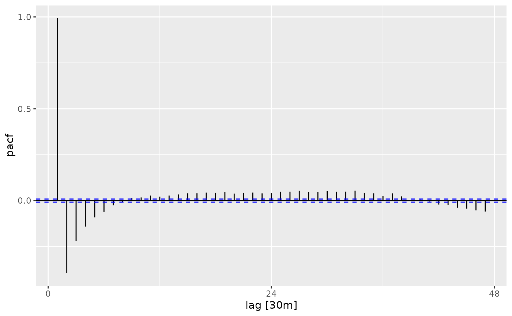
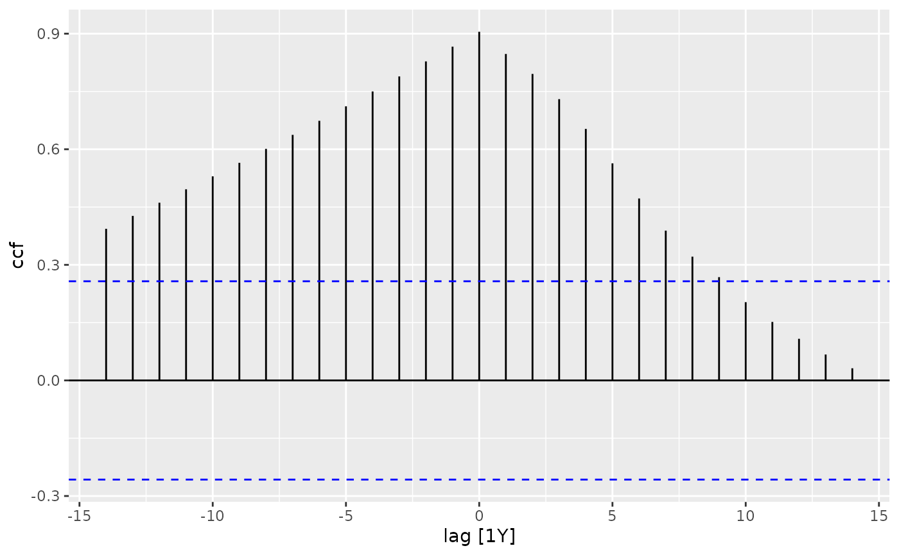

The function ACF computes an estimate of the autocorrelation function
of a (possibly multivariate) tsibble. Function PACF computes an estimate
of the partial autocorrelation function of a (possibly multivariate) tsibble.
Function CCF computes the cross-correlation or cross-covariance of two columns
from a tsibble.
ACF(
.data,
y,
...,
lag_max = NULL,
type = c("correlation", "covariance", "partial"),
na.action = na.contiguous,
demean = TRUE,
tapered = FALSE
)
PACF(.data, y, ..., lag_max = NULL, na.action = na.contiguous, tapered = FALSE)
CCF(
.data,
y,
x,
...,
lag_max = NULL,
type = c("correlation", "covariance"),
na.action = na.contiguous
)A tsibble
The column(s) from the tsibble used to compute the ACF, PACF or CCF.
maximum lag at which to calculate the acf. Default is 10*log10(N/m) where N is the number of observations and m the number of series. Will be automatically limited to one less than the number of observations in the series.
character string giving the type of acf to be computed.
Allowed values are
"correlation" (the default), "covariance" or
"partial". Will be partially matched.
function to be called to handle missing
values. na.pass can be used.
logical. Should the covariances be about the sample means?
Produces banded and tapered estimates of the (partial) autocorrelation.
a univariate or multivariate (not ccf) numeric time
series object or a numeric vector or matrix, or an "acf" object.
The ACF, PACF and CCF functions return objects
of class "tbl_cf", which is a tsibble containing the correlations computed.
The functions improve the stats::acf(), stats::pacf() and
stats::ccf() functions. The main differences are that ACF does not plot
the exact correlation at lag 0 when type=="correlation" and
the horizontal axes show lags in time units rather than seasonal units.
The resulting tables from these functions can also be plotted using
autoplot.tbl_cf().
Hyndman, R.J. (2015). Discussion of "High-dimensional autocovariance matrices and optimal linear prediction". Electronic Journal of Statistics, 9, 792-796.
McMurry, T. L., & Politis, D. N. (2010). Banded and tapered estimates for autocovariance matrices and the linear process bootstrap. Journal of Time Series Analysis, 31(6), 471-482.
library(tsibble)
#>
#> Attaching package: ‘tsibble’
#> The following objects are masked from ‘package:base’:
#>
#> intersect, setdiff, union
library(tsibbledata)
library(dplyr)
#>
#> Attaching package: ‘dplyr’
#> The following objects are masked from ‘package:stats’:
#>
#> filter, lag
#> The following objects are masked from ‘package:base’:
#>
#> intersect, setdiff, setequal, union
vic_elec %>% ACF(Temperature)
#> # A tsibble: 47 x 2 [30m]
#> lag acf
#> <cf_lag> <dbl>
#> 1 30m 0.994
#> 2 60m 0.982
#> 3 90m 0.967
#> 4 120m 0.948
#> 5 150m 0.925
#> 6 180m 0.901
#> 7 210m 0.873
#> 8 240m 0.845
#> 9 270m 0.815
#> 10 300m 0.785
#> # ℹ 37 more rows
vic_elec %>% ACF(Temperature) %>% autoplot()

vic_elec %>% PACF(Temperature)
#> # A tsibble: 47 x 2 [30m]
#> lag pacf
#> <cf_lag> <dbl>
#> 1 30m 0.994
#> 2 60m -0.395
#> 3 90m -0.220
#> 4 120m -0.141
#> 5 150m -0.0911
#> 6 180m -0.0611
#> 7 210m -0.0252
#> 8 240m -0.0101
#> 9 270m 0.0152
#> 10 300m 0.0169
#> # ℹ 37 more rows
vic_elec %>% PACF(Temperature) %>% autoplot()

global_economy %>%
filter(Country == "Australia") %>%
CCF(GDP, Population)
#> # A tsibble: 29 x 3 [1Y]
#> # Key: Country [1]
#> Country lag ccf
#> <fct> <cf_lag> <dbl>
#> 1 Australia -14Y 0.394
#> 2 Australia -13Y 0.427
#> 3 Australia -12Y 0.461
#> 4 Australia -11Y 0.496
#> 5 Australia -10Y 0.530
#> 6 Australia -9Y 0.565
#> 7 Australia -8Y 0.601
#> 8 Australia -7Y 0.637
#> 9 Australia -6Y 0.674
#> 10 Australia -5Y 0.711
#> # ℹ 19 more rows
global_economy %>%
filter(Country == "Australia") %>%
CCF(GDP, Population) %>%
autoplot()
